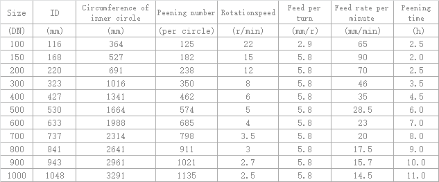

1. The function of peening for casting pipe mould: it can make the inner wall of the pipe mould cold strengthened, eliminate the thermal fatigue stress in the process of welding and service, and close the micro-cracks; store the casting pipe mould powder, enhance the friction force of hot metal during casting , reduce the relative slip between hot metal and pipe wall and prolong the service life of casting pipe mould.
2. Implementation steps: whether it is a new pipe mould or re-repair pipe mould, it must be performed peening treatment before using. The grinding for inner wall shall be performed first, and the grinding and peening must be divided into two working procedures. The peening mechanism shall not be installed when grinding and the air grinder shall be used. The pneumatic grinder shall be changed after grinding. The detail steps are as follows:
(1) The pipe mould shall be put on an adjustable carrying roller device which drives the pipe mould to rotate at a constant speed to adjust the relative position and height between the casting pipe mould and the peening machine.
(2) Grinding and peeing car goes forward (back) along the pipe mould axis direction in uniform speed to complete the grinding and peening repairing work. See the attached figures and the table 4 for the specific parameters:
Inner surface peening parameter of pipe mould:
Sphere diameter of a point: 4-6mm;
Two-point overlap distance: 0.5mm;
Center distance of two points: 2.9mm;
Depth of point: 0.2-0.3mm;
Center distance of three-points:5.8mm。
Table 4

(3) It is suggested that peening should be done by two times to avoid the micro-cracks.